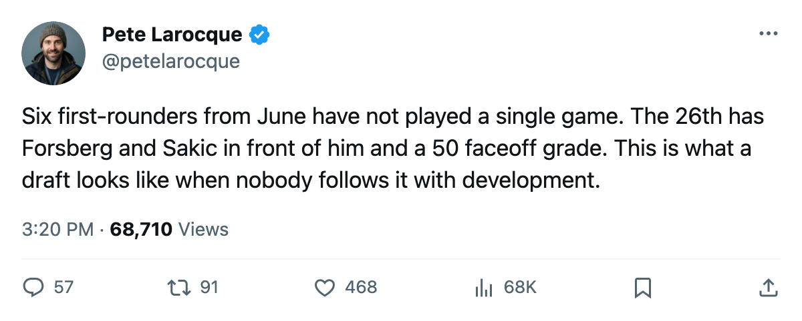
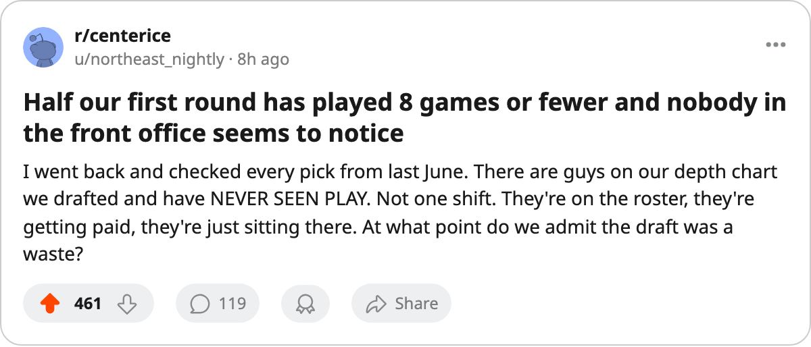

Six First-Rounders From June Have Played 0 Games. Half the Class Has 8 or Fewer.
The 2004 draft class split in two by February. The front end plays. The back end watches.
 Pete LarocqueScouting editor · The Prospect File
Pete LarocqueScouting editor · The Prospect File
Six of the 28 first-round picks from June 2004 have not appeared in a single game this season. The 11th pick has not put on a sweater.
The 2004 class is 28 first-rounders deep. Fourteen of them, half the class, have played 8 games or fewer. The February development report showed 12 of the 28 with a potential grade below their overall grade. The ice-time column tells the same story from the bench.
| Player | Pick | Club | GP | Overall | Potential | Years left |
|---|---|---|---|---|---|---|
| Robert Olvestad68 | 11 | BUF | 0 | 66 | 60 | 3 |
| Torsten Schmitt71 | 17 | CHI | 0 | 67 | 69 | 3 |
| Maxim Zholtok65 | 21 | EDM | 0 | 65 | 84 | 1 |
| Mathieu Landry71 | 22 | FLA | 0 | 70 | 63 | 2 |
| Yury Stashan65 | 26 | COL | 0 | 61 | 62 | 3 |
| Niklas Hassinen64 | 30 | DAL | 0 | 66 | 70 | 2 |
Four of these six carry potential grades above their overall. The Bureau still believes Zholtok, Schmitt, Stashan and Hassinen can get better, but none of their clubs has put them in a lineup.
Three playoff teams and three not
 Colorado Avalanche sits at 82 points with Forsberg, Sakic, Kariya, Hejduk and Selanne up front. Stashan is a 20-year-old center with a 61 overall (base 68, Index at 0), 73 inches and 208 pounds on a 3-year deal at $0.83M. He will not crack that lineup before his contract ends, and his potential grade sits one point above his overall, the narrowest margin in the group. His strongest attributes: INJU 81, SHPW 73, ACCE 71. His weakest: AGGR 50, CHKG 50, FACE 50. He is surrounded by four players the rest of the league would trade a first-rounder for.
Colorado Avalanche sits at 82 points with Forsberg, Sakic, Kariya, Hejduk and Selanne up front. Stashan is a 20-year-old center with a 61 overall (base 68, Index at 0), 73 inches and 208 pounds on a 3-year deal at $0.83M. He will not crack that lineup before his contract ends, and his potential grade sits one point above his overall, the narrowest margin in the group. His strongest attributes: INJU 81, SHPW 73, ACCE 71. His weakest: AGGR 50, CHKG 50, FACE 50. He is surrounded by four players the rest of the league would trade a first-rounder for.
 Edmonton Oilers at 82 has a similar problem with Zholtok, except worse: the 21st pick's contract has 1 year left. He becomes restricted this summer at 21 with zero league games played. Edmonton's front office has a decision to make before July. His 84 potential is the highest in this group and 19 points above his 65 overall, the kind of gap the Bureau flags as a player who needs a real lineup spot to close it.
Edmonton Oilers at 82 has a similar problem with Zholtok, except worse: the 21st pick's contract has 1 year left. He becomes restricted this summer at 21 with zero league games played. Edmonton's front office has a decision to make before July. His 84 potential is the highest in this group and 19 points above his 65 overall, the kind of gap the Bureau flags as a player who needs a real lineup spot to close it.
 Dallas Stars at 85 in the Pacific holds Hassinen, the 30th pick, the last man drafted in round one. His potential of 70 sits four points above his 66 overall. Dallas has not looked at him.
Dallas Stars at 85 in the Pacific holds Hassinen, the 30th pick, the last man drafted in round one. His potential of 70 sits four points above his 66 overall. Dallas has not looked at him.
The other three sit on clubs that should be playing these players.  Buffalo Sabres has 62 points, an 8-game losing streak, and the 11th pick parked on the press box with 3 years left on his deal. Olvestad's potential of 60 is the floor of the first round. Buffalo should be done with the experiment and should say so publicly.
Buffalo Sabres has 62 points, an 8-game losing streak, and the 11th pick parked on the press box with 3 years left on his deal. Olvestad's potential of 60 is the floor of the first round. Buffalo should be done with the experiment and should say so publicly.
 Chicago Blackhawks sits at 57 points, the worst club in the Central, and has not dressed Schmitt, a 20-year-old goaltender with a 69 potential on a 3-year deal. Chicago's netminding has not been good enough to justify ignoring a first-round pick at the position.
Chicago Blackhawks sits at 57 points, the worst club in the Central, and has not dressed Schmitt, a 20-year-old goaltender with a 69 potential on a 3-year deal. Chicago's netminding has not been good enough to justify ignoring a first-round pick at the position.
 Florida Panthers at 61 holds Landry, a 21-year-old goaltender with a 70 overall. Florida already passed on him once this season and has not come back.
Florida Panthers at 61 holds Landry, a 21-year-old goaltender with a 70 overall. Florida already passed on him once this season and has not come back.
The 8-game line
Widen the cut from zero to eight and the group doubles to 14. Janota (7th,  Carolina Hurricanes) made one start of 60 minutes and went back to the scratched list. Lopatin (23rd,
Carolina Hurricanes) made one start of 60 minutes and went back to the scratched list. Lopatin (23rd,  Washington Capitals) played 16 minutes. Lehto (24th,
Washington Capitals) played 16 minutes. Lehto (24th,  Philadelphia Flyers) played 1 game. Prommersberger (14th,
Philadelphia Flyers) played 1 game. Prommersberger (14th,  Ottawa Senators) and Stahle (19th,
Ottawa Senators) and Stahle (19th,  Toronto Maple Leafs) each made 4 appearances. Vas (25th,
Toronto Maple Leafs) each made 4 appearances. Vas (25th,  Nashville Predators) played 5. Nylander (12th,
Nashville Predators) played 5. Nylander (12th,  San Jose Sharks) played 7. Pesonen (20th,
San Jose Sharks) played 7. Pesonen (20th,  Detroit Red Wings) played 8.
Detroit Red Wings) played 8.
The top of this class got its run. Vaclav Spacek75 (1st) has 16 points in 42 games. Tuomas Lydman74 (10th) has 24 in 59. Kloucek (8th) played 53, Pihlman (9th) played 54. Those four are fine. Half the class, though, never gets on the ice, and the clubs that drafted them are not trying to fix it.
Stashan's case sums up the class. The Book puts his potential at 62, one point above his 61 overall. His faceoff grade sits at 50. What is holding him back is the lineup card, not the contract.

